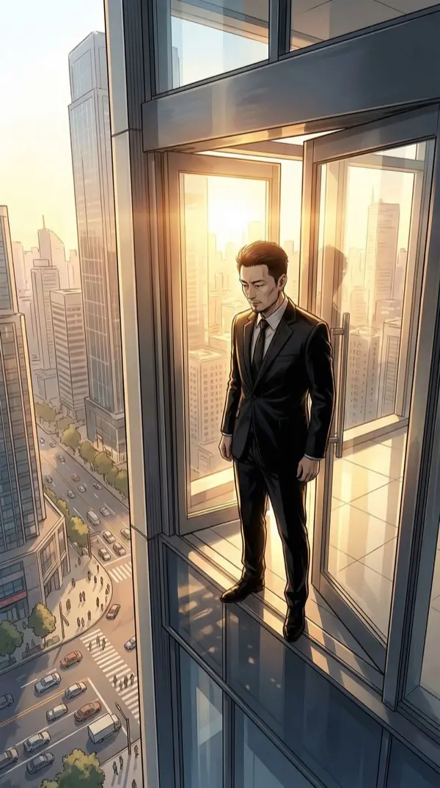
周一早上8点12分。我正准备喝第一口咖啡。
窗外，一个黑色身影站在公司大门口。西装剪裁利落，军人般笔直的身姿。
这种站姿我见过。特种部队出身的人，退伍十年也改不掉。
因为我自己就是。
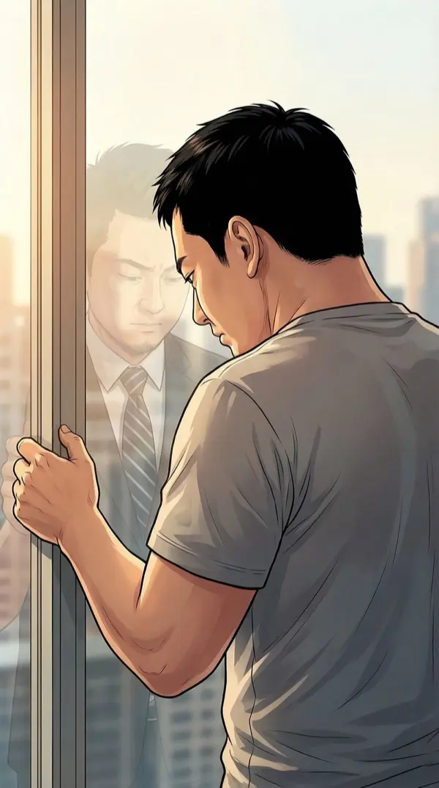
我的手不自觉地抓紧了窗框。
那个轮廓……削瘦、棱角分明、肩膀微微前倾——这是常年持枪射击留下的习惯。
不可能。他三年前就死了。我亲眼看到他倒在雪地里。档案上的红色印章写着"因公牺牲"。
死人不会穿阿玛尼。
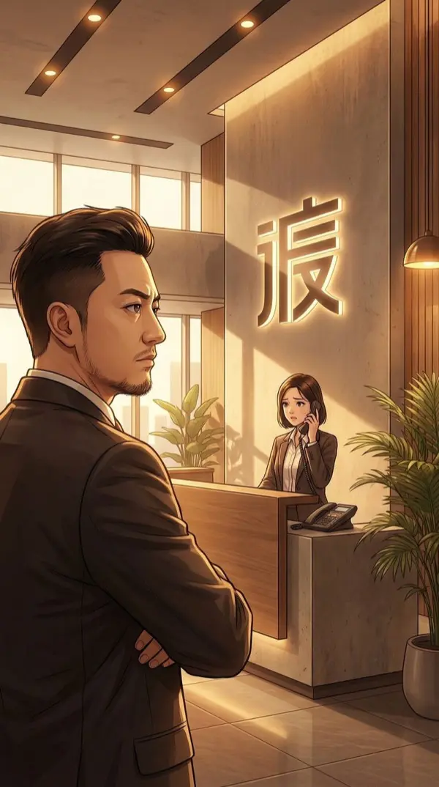
桌上的内线电话响了。前台小赵的声音带着一丝不确定：
"朱总，有位刘先生来访，没有预约。他说……您认识他。"
刘先生。
刘铮。代号"冰刃"。冰封行动突击组副队长。我的搭档。
我以为已经埋葬的名字。
"……请他到三楼会议室。"
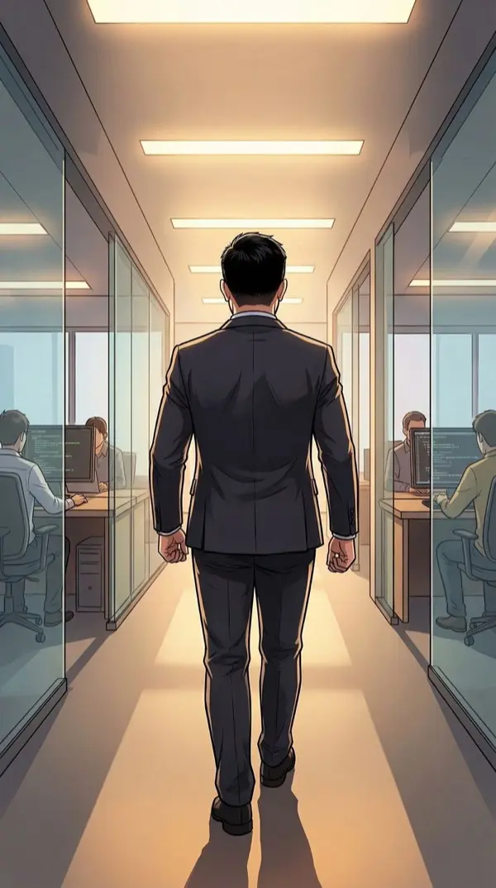
走向会议室的路只有三十米。
我的脚步自动切换成了战术步伐——脚跟轻落、重心低沉、随时可以变向。三年的创业生活没有磨掉肌肉记忆。
冷静。他来找你，说明他有目的。先听，后判断。
玻璃走廊里，程序员们还在改bug。没人注意到他们的CEO走路姿势突然变了。
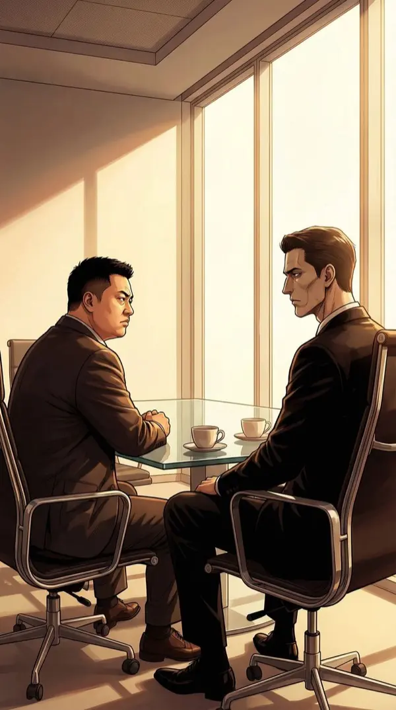
推开会议室的门。
他站在窗边，背对着我。听到门声，缓缓转身。
三年。他瘦了很多，颧骨更突出了，眼窝更深。但那双眼睛——锐利、冷静、永远在计算——一点没变。
"幽灵。"他叫的是我的代号。
"冰刃。"我也用了他的。
两杯咖啡摆在桌上。谁都没坐。
他从西装内袋掏出一张名片，两指夹着，递过来。
哑光黑底，银色烫字——
"智瞳AI · 联合创始人 · 刘铮"
智瞳AI。赵鹏飞投的那家公司。我的直接竞品。昨天还想在路演上搞我的那家。
我三年前在雪地里拼了命救的兄弟，现在是我商业上的敌人。
这剧本谁写的？我要投诉编剧。
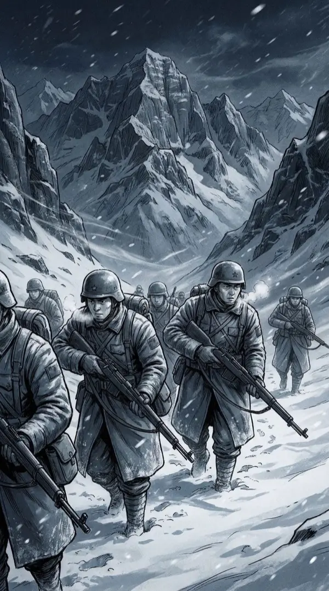
三年前。瓦罕走廊。海拔4200米。
零下27度的暴风雪中，十个人的小队在山脊上匍匐前进。通讯在两小时前中断。接应直升机没来。
那是我带队的最后一次任务。代号"冰封"。目标：摧毁走廊深处的非法武器转运站。
任务成功了。撤退的路，没成功。
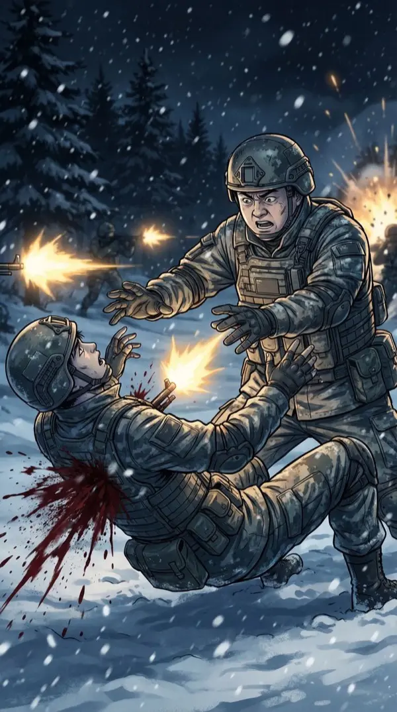
返程第三公里。伏击。
刘铮是第一个被打中的。子弹穿过左肩，他向后倒下去的时候，血在白色雪地上炸开一朵红花。
那一刻我的世界变成了慢动作。我的腿在跑，嘴在喊他的名字，但声音被暴风雪吞没了。
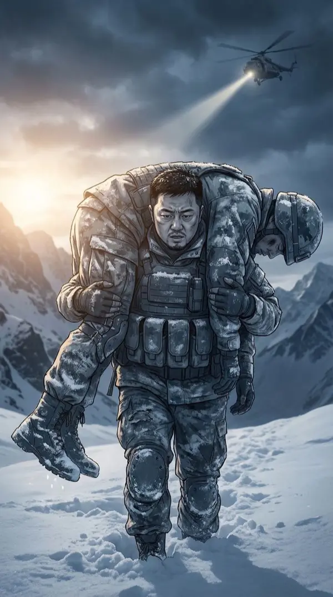
我背着他在雪地里走了六公里。
他的血浸透了我的后背。体温在下降。他在我耳边说了最后一句话——
"放下我……你带其他人走。"
我没放。我背着他又走了一公里。直到第二波伏击来了。
爆炸把我们掀翻在雪坑里。我醒来的时候，他不在我身边了。雪地上只有血迹和拖痕——
拖痕不是朝着我们的方向。是朝着敌人的方向。
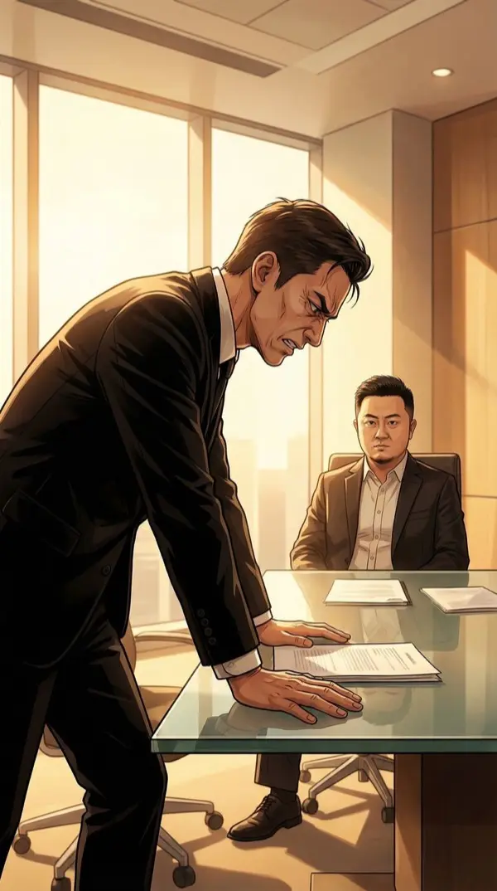
会议室里，刘铮终于坐下了。他的声音很平，像在念报告：
"你带走了八个人。留下了两个。我和赵阳。"
"档案上写的是'牺牲'。你知道真实情况吗？"
我没说话。
"我被他们俘虏了。关了两年零三个月。逃出来用了四个月。回国之后发现——我的身份已经被注销了。没有户口，没有档案，法律意义上，我是一个不存在的人。"
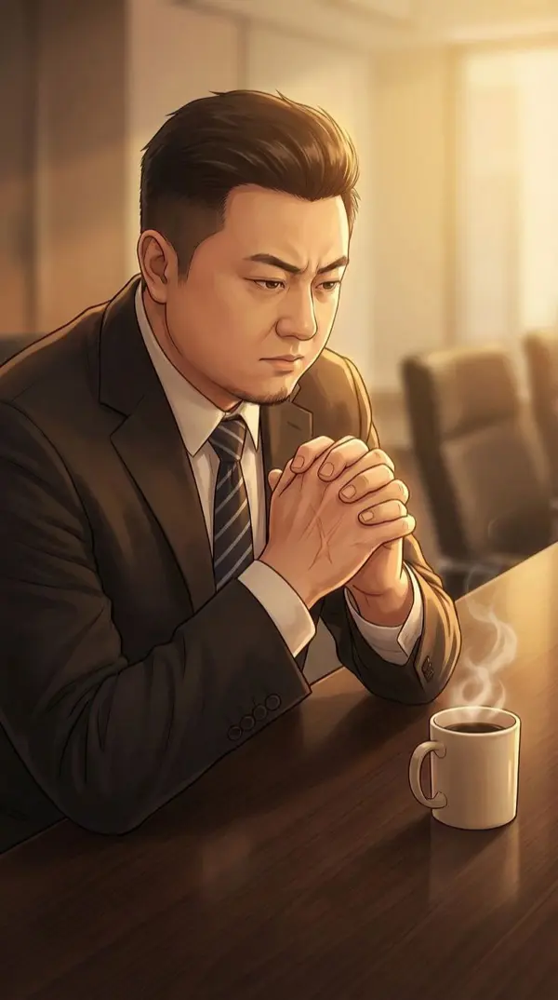
我的双手在桌面上握得死紧。
我回去找过你。爆炸之后我挖了两个小时的雪。找到了赵阳的一只靴子，找到了你的步枪，但没有找到你们。
部队告诉我：确认牺牲。任务结束。活着的人回来，死了的人上墙。
我在那面墙前站了一整天。
但我没说出口。因为"我找过你"这种话，对一个被关了两年多的人来说，毫无意义。
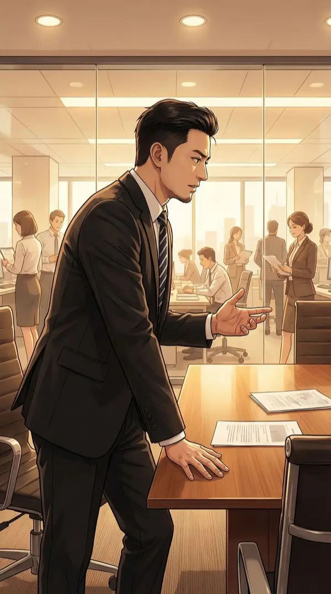
刘铮站起来，一只手撑着桌面，另一只手做了个"不用解释"的手势。
"我没来算旧账。赵鹏飞给了我新身份、资金和技术团队。不管他目的是什么，他是唯一在我一无所有的时候伸手的人。"
"现在，他让我来跟你谈一件事。"
所以——你是带着使命来的。赵鹏飞的使命。
可你的眼神在说话时闪了两次。你不是完全自愿的。
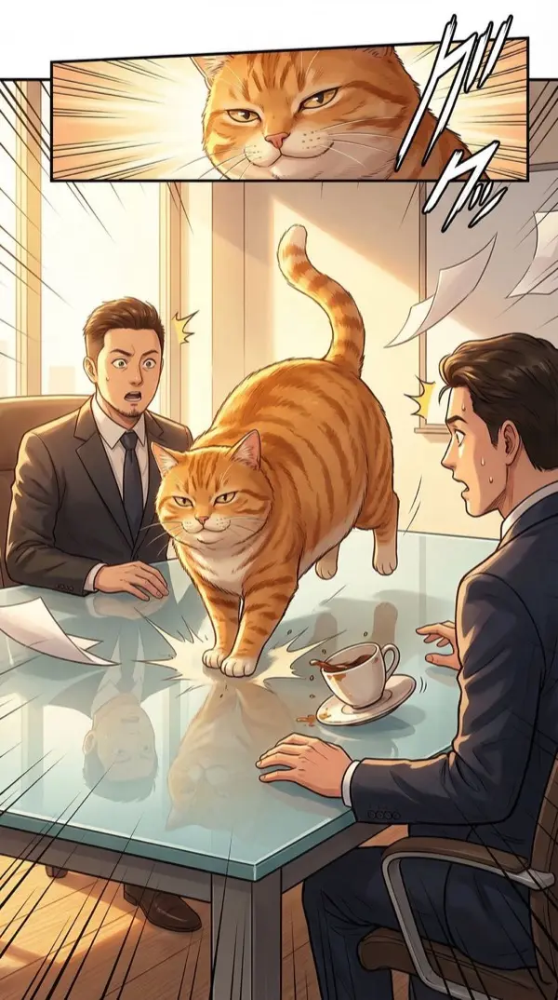
就在气氛凝固到可以切开的时候——
"咣当。"
十六斤的大橘从不知道哪儿飞身跃上了会议桌。前爪精准踩翻了一杯咖啡，后脚把刘铮的名片踢到地上，然后一屁股坐在桌子正中央，用"这会议室归我管"的眼神扫视了双方。
……你是我们公司最强搅局选手。没有之一。
刘铮愣了两秒，嘴角居然不自觉地抽了一下。
"你养了只猫？"
"它养了我。"
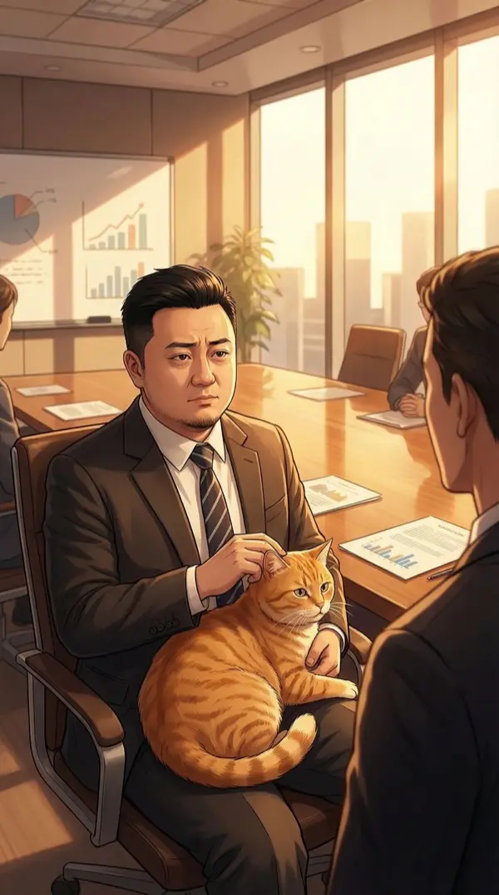
大橘赖在我腿上不走了。我一边挠它的下巴，一边看着对面这张既熟悉又陌生的脸。
刘铮。我的兄弟。我的竞品。
A — 当场拒绝一切合作，立刻对立
最安全。但刘铮是被赵鹏飞利用的，把他推向对面是帮赵鹏飞。
B — 接受合并谈判，打入敌人内部
最聪明。但如果刘铮识破意图，我就两面受敌。
C — 不谈业务，先谈过去——试探他的真实立场 ✓
最慢。但我需要知道一件事：他心里还有多少"冰刃"，还有多少"赵鹏飞的人"。
情报不足时，永远先收集信息。这是"幽灵"的生存法则。
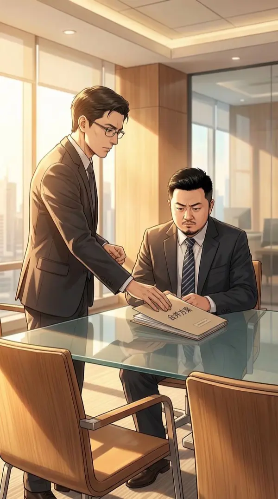
刘铮没有被我的"先叙旧"策略完全带偏。十五分钟后，他从公文包里抽出了一份文件夹，推过桌面。
封面两个大字：合并方案。
"幻境科技和智瞳AI合并。技术互补，资源共享。你继续当CEO，我管技术。赵鹏飞做大股东。"
翻译一下：赵鹏飞用刘铮当感情牌来收购我的公司，然后把我架空。
好棋。但下棋的人低估了棋子的感情。
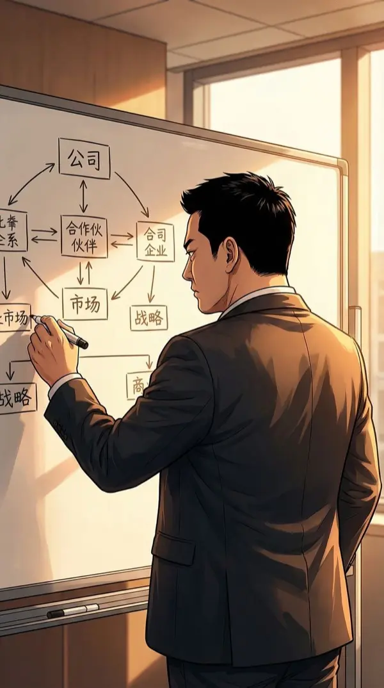
送走刘铮后，我在办公室的白板上画了半个小时。
赵鹏飞的布局渐渐清晰——他不是在投资，是在编织一张网。智瞳AI是一步棋，小王是一步棋，路演上的投影仪是一步棋，现在刘铮的"合并方案"又是一步棋。
但他犯了一个错误：他以为刘铮只是一枚棋子。
他不了解战场上形成的兄弟关系有多深。哪怕三年的仇恨和误解盖在上面，底下那根绳子还在。
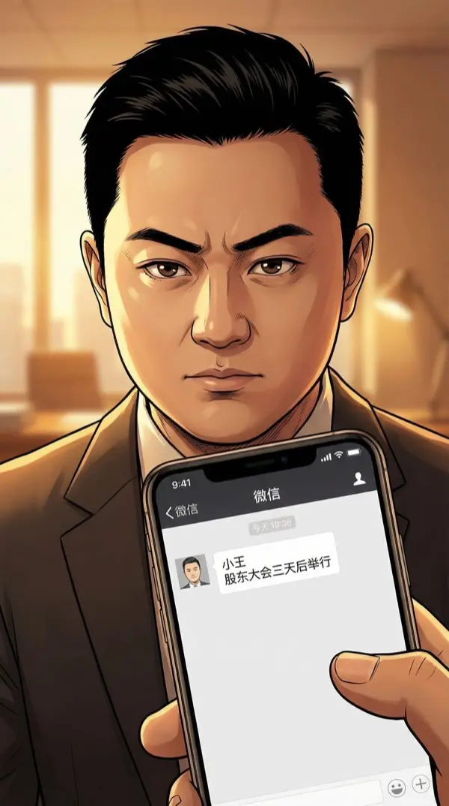
手机震了一下。小王的消息：
"朱哥，赵鹏飞在联系张总和李总，可能要发起股东投票。
三天之内。"
股东投票。如果赵鹏飞联合足够多的外部股东，他可以绕过我直接推动合并。
三天。我只有三天。
门被推开的力度差点把门把手拍进墙里。
林婉清站在门口，手里攥着一叠打印纸，眼睛里是那种"我挖到大新闻"的光。
"你那个老战友——刘铮。他的'新身份'是赵鹏飞帮他办的。假护照、假学历、假工作背景。全套。"
"而且——"她把纸摊在桌上，"他的智瞳AI股份，代持人是赵鹏飞的小舅子。刘铮名义上是联合创始人，实际上一股都没有。"
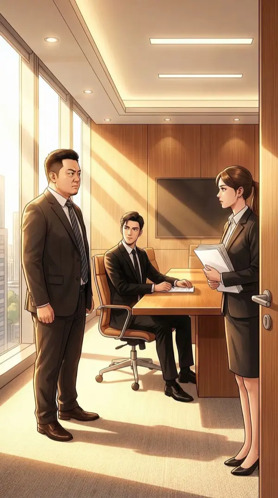
刘铮不持有任何真实股份。他只是一个被赵鹏飞用假身份绑住的"提线木偶"。
赵鹏飞不只是在利用他——是在控制他。一旦不听话，身份造假这件事就是悬在头上的刀。
婉清看着我的表情变化，追问：
"你认识他。不只是商业关系。对吗？"
我没有否认。
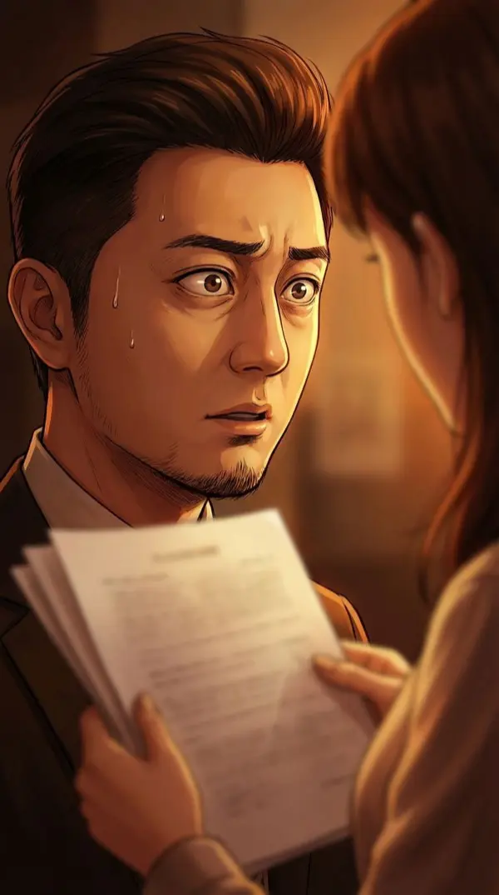
刘铮在会议室里看到婉清手里的资料时，眼睛闪过的不是愤怒——是恐惧。
他怕的不是我知道。他怕的是赵鹏飞知道他暴露了。
一个靠假身份活在法律灰色地带的人。一个被"恩人"用真相绑架的人。
和小王一样。被困住了。
赵鹏飞的商业模式真清晰——专门投资绝望的人，然后用他们的绝望当杠杆。
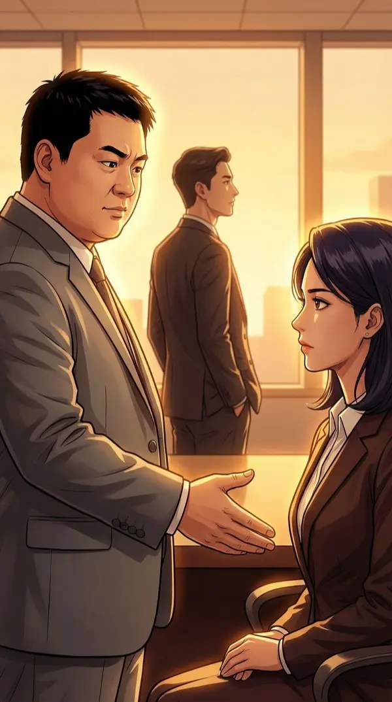
婉清等着我回答。她查到了刘铮的假身份，但她还不知道更深层的事——冰封行动，我的军人身份，以及刘铮为什么会变成现在这样。
A — 只说商业层面的关系
安全但不够。她迟早会自己查到更多，不如主动。
B — 告诉她全部真相 ✓
风险最大——但她已经证明了自己的能力和忠诚。而接下来的战斗，我需要一个完全知情的盟友。
C — 让她停止调查，说"我来处理"
最蠢的选项。林婉清听到"停止调查"只会查得更狠。
菩萨心肠的另一层含义——信任也是一种慈悲。
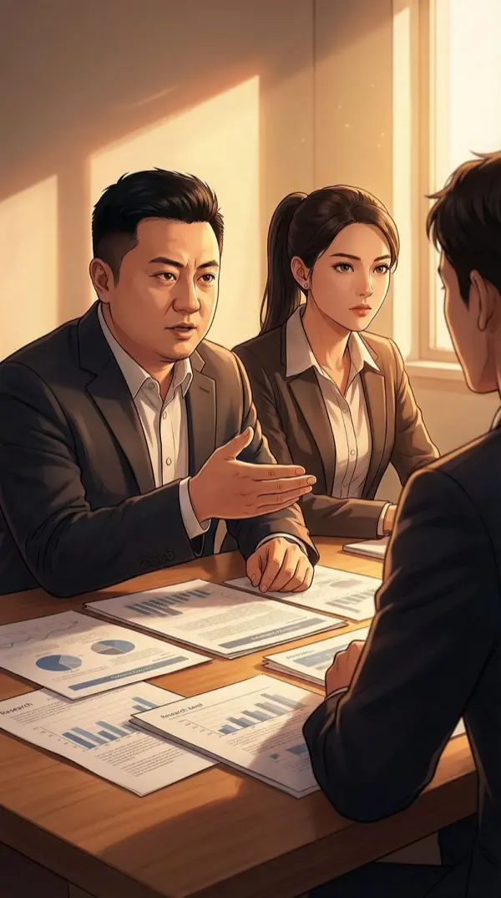
我让她坐下。关了门。关了窗。
"我叫朱江。外面的人知道的是AI创业者朱江。但在三年前——"
我说了四十分钟。冰封行动、代号幽灵、刘铮和赵阳、雪地上的血、醒来后他不在身边。
婉清听完，沉默了整整一分钟。然后：
"所以你上次路演心跳才那么稳。我以为你天赋异禀。原来是——"
"训练出来的。"
"那你公司做的AI模型——底层架构灵感来源是不是——"
"军用目标识别系统。民用化改造。"
她深吸一口气："……你的简历造假程度比刘铮严重多了。"
……她的吐槽角度永远清奇。
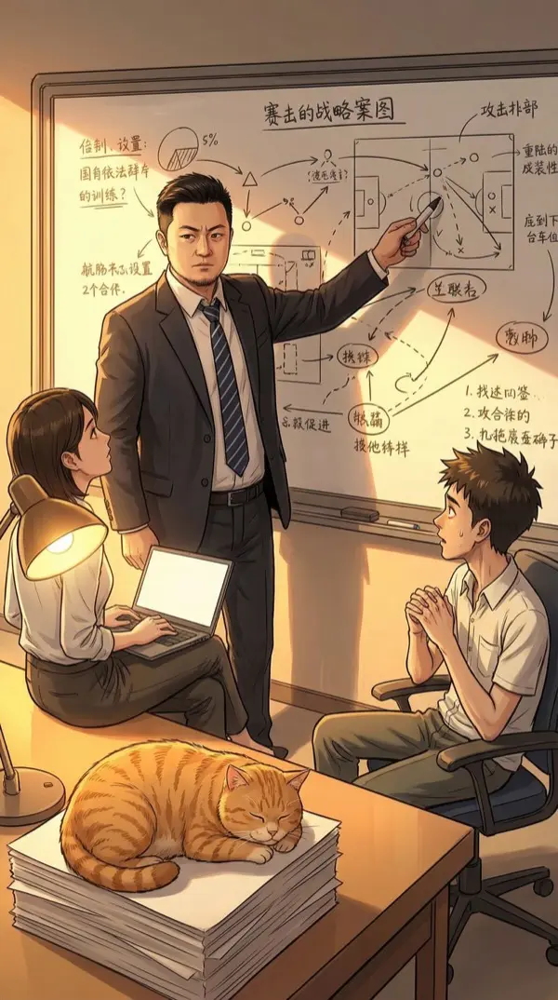
晚上9点。办公室变成了作战室。
婉清坐在桌子上，笔记本打开了十几个标签页。小王缩在角落的椅子里，神经紧绷但没跑——这说明他的忠诚度确认完毕。大橘占领了打印出来的赵鹏飞财务报告，在上面睡成了一个肉球。
我的团队：一个前特种兵、一个调查狂人、一个反水间谍、一只十六斤的橘猫。
赵鹏飞，你完了。
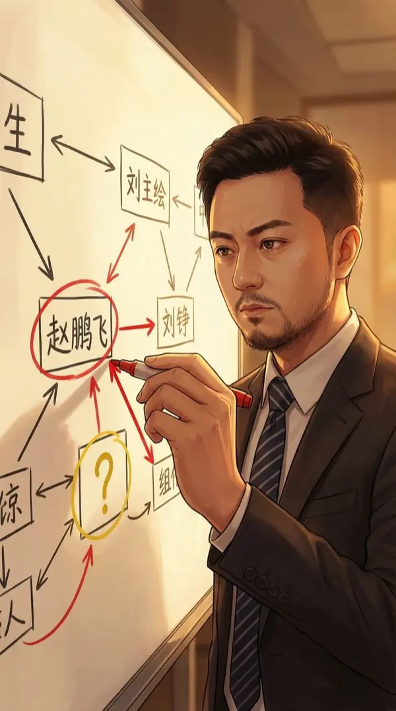
白板上的关系图已经画到了第三版。红色是敌人，绿色是盟友，黄色是"可争取"。
赵鹏飞——红色大圈。下面连着：智瞳AI、两个外部股东、三家跟风的小基金。
刘铮——黄色圈，带问号。
"关键在刘铮。"婉清指着白板，"如果能把他从赵鹏飞那边剥离出来，赵鹏飞的技术团队就是空壳。"
她说得对。但要剥离刘铮，首先要解决他的假身份问题。一个法律上"不存在"的人，被人用真相拿捏——这才是最深的锁链。
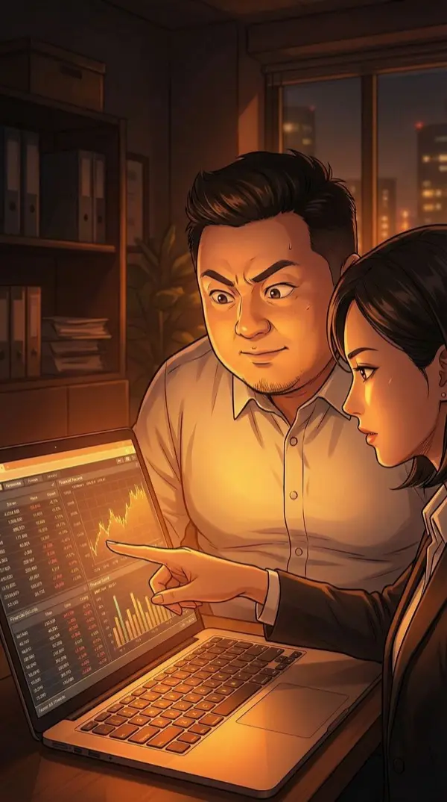
婉清在翻阅财务记录时，突然停住了。
"等等。刘铮入职智瞳AI的时间——比赵鹏飞投资智瞳AI还早三个月。"
这意味着……不是赵鹏飞找到刘铮的。是刘铮先到了智瞳AI，然后赵鹏飞才介入。
时间线不对。
如果刘铮不是被赵鹏飞"招募"的，那他一开始为什么去了智瞳AI？一个做AI视觉的公司——和一个前特种兵有什么关系？
除非……智瞳AI的核心技术，和我一样，来源于军用系统。
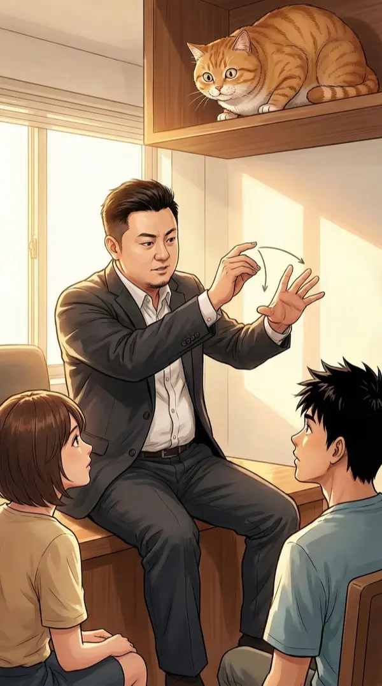
我坐在桌沿上，俯视着下面两张紧张的脸和一张无所谓的猫脸。
"计划分三步。"
"第一步：小王继续传递假情报给赵鹏飞，让他以为合并谈判在正常推进。争取时间。"
"第二步：婉清去调查刘铮为什么选择智瞳AI。那三个月的空白期是关键。"
"第三步——"我看着窗外的夜色，"我去找刘铮。不带商业方案。只带一瓶酒。"
婉清挑了下眉："你打算感化他？"
"我打算还他一个真相。三年前那个雪夜，我做了什么选择、为什么那样选择。他有权知道。"
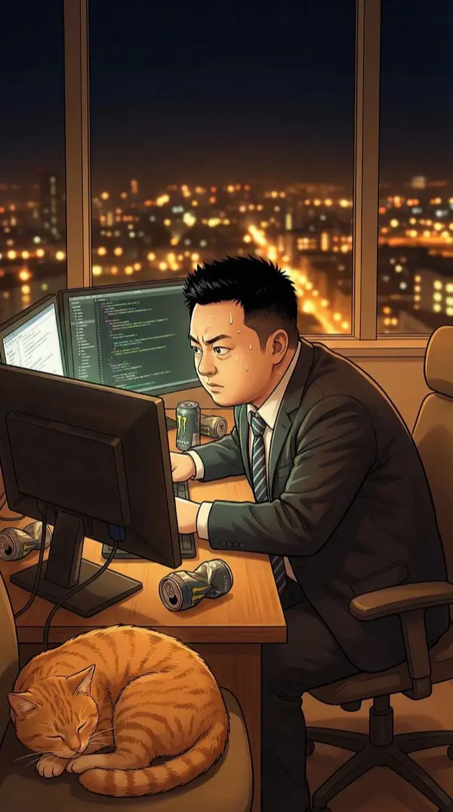
凌晨1点。所有人都走了。
我一个人对着双屏，左边是公司核心模型的代码——正在跑最后一轮优化。右边是一份加密文件，内容是我从部队退伍时带出来的唯一一份东西：冰封行动的完整任务日志。
明天见刘铮的时候，我要把这份日志给他看。每一分钟的记录。包括我在暴风雪里挖了两小时的雪找他的那段。
真相是最好的武器。前提是你自己经得起真相。
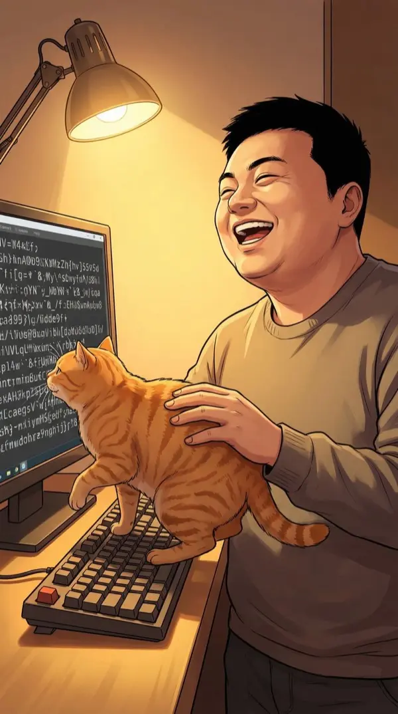
大橘又来了。
十六斤的肉弹精准降落在键盘上。屏幕上的代码瞬间多了一行：
gggggggghjklasdfghjk;;;;;mmmmm
我笑出了声。今天第一次真心笑。
"你知道吗，你要是学会写代码，我就可以提前退休了。"
大橘打了个哈欠，表情明确传达：退休是你的事。我的KPI是睡满16小时。
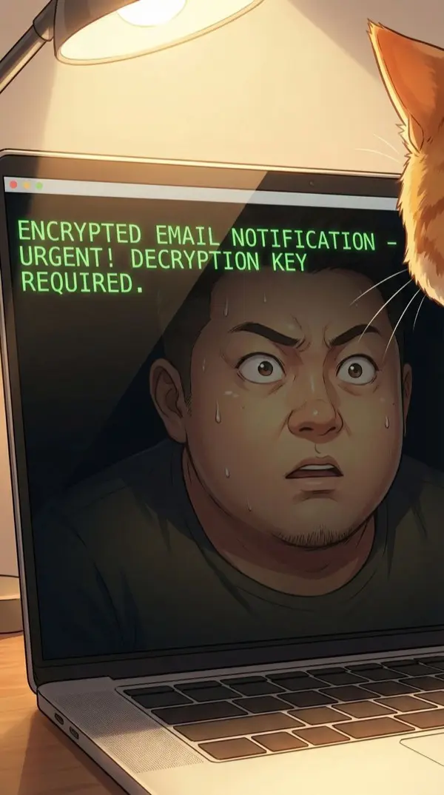
笑容还挂在脸上的时候，屏幕右下角弹出了一个通知。
加密邮件。发件人：unknown。和上次一样。
又来了。
我的手指悬在触控板上方，停了三秒。然后点开。
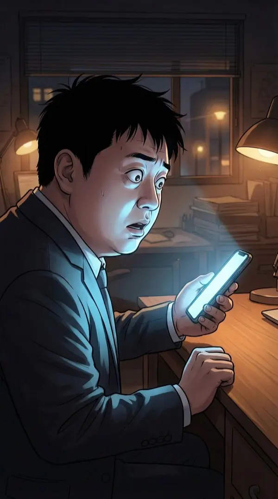
邮件只有三行。但每一行都像一记重锤：
"你以为刘铮是唯一活着的人？
赵阳也没死。
他比你想象的更近。"
A — 立刻告诉刘铮这个消息
如果赵阳也活着，刘铮有权知道。但如果这是陷阱呢？
B — 先独自调查赵阳的下落
最稳妥。但"比你想象的更近"——时间可能不多。
C — 回复邮件，引蛇出洞 ✓
这个"unknown"知道冰封行动的一切。他要么是赵阳本人，要么和赵阳有关。与其被动等待，不如主动出击。
幽灵的第一课：当你被人盯上的时候，最好的防守是让对方以为他在进攻。
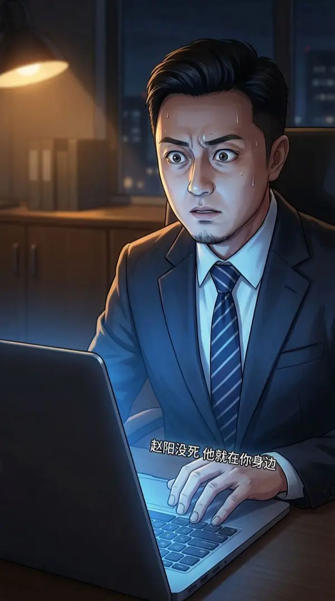
我敲下了回复：
"如果你是赵阳——你欠我一个解释。如果你不是——你欠我一个理由：为什么要搅动一个已经结束的任务。
三天后。南山咖啡馆。来或者不来，我都会在那里。
——幽灵。"
发送。
这封邮件是鱼钩。不管上钩的是谁，我都需要面对面看到他。
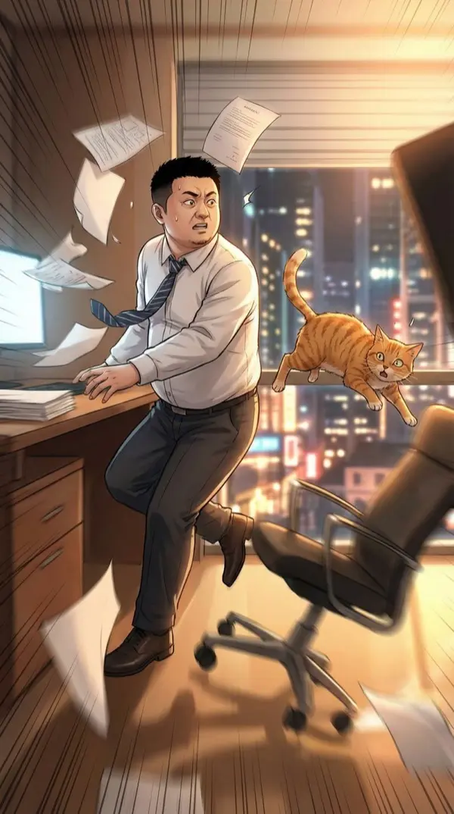
发送之后不到十秒，回复来了。速度快得不正常——对方一直在等我回信。
"不用等三天。
看看你的窗外。"
我猛地站起来。椅子向后滑出去两米，撞在柜子上。大橘被吓得从键盘上弹射起飞。
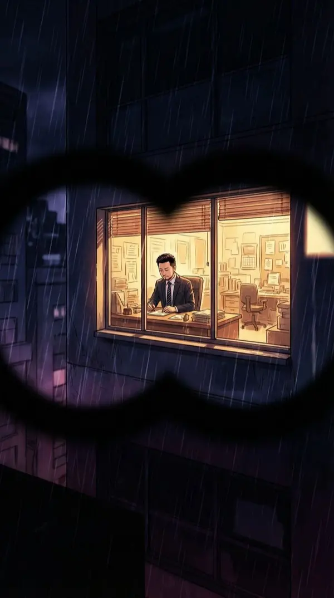
对面写字楼的第十五层。有一个窗户的灯刚亮了一下，又灭了。
那个位置……正对我办公室。视线无遮挡。如果有人用望远镜或者长焦——他能看到我桌上的每一个字。
他一直在看。不只是今天。
"比你想象的更近。"原来是字面意思。
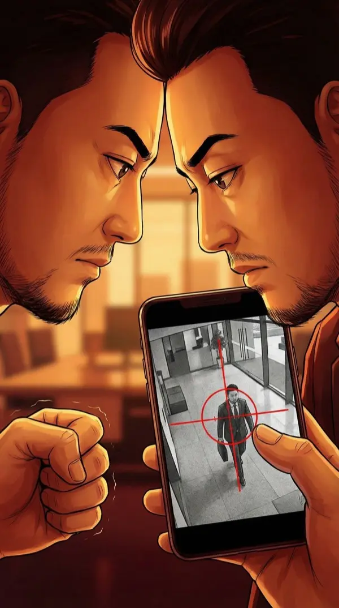
手机又震了。一张照片。
照片里是我——今天早上走进公司大门的背影。拍摄角度是从上方，大约十五楼的高度。照片上画了一个红色的十字准星。
他在威胁我吗？不——如果他想杀我，今天有一百次机会。
这是在告诉我：我能看到你的一切。你的每一步，我都在。
这不是敌人的做法。这是——监视者。观察者。
赵阳的代号是什么来着？
"鹰眼"。
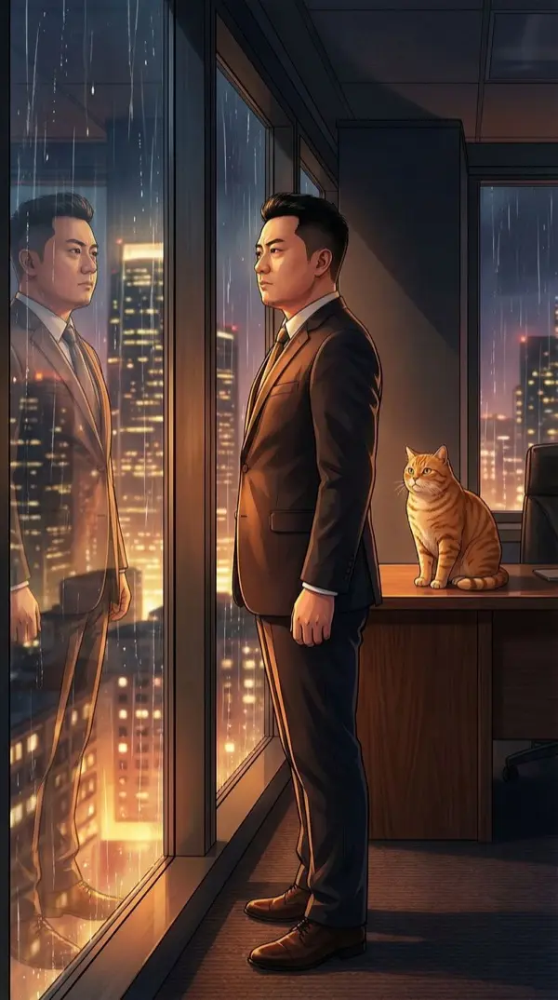
我走到窗边。没有躲。没有关灯。
如果他在看——让他看清楚。
窗外开始下雨了。雨水在玻璃上画出一条条透明的轨迹，城市的灯光在雨幕后变成模糊的光团。
玻璃上映出我的倒影。身后，大橘蹲在桌上，歪着头看我。
冰封行动。十个人出发，八个人回来。两个人"牺牲"。
现在我知道了——一个变成了我的竞品CEO。另一个在对面楼里用望远镜看我。
三个幽灵。三年后，在这座城市重聚。
但有一个问题始终没有答案——
是谁，在三年前出卖了我们的行动路线？
大橘"喵"了一声。
我知道。我也睡不着。
亡者归来 · 身份枷锁 · 鹰眼苏醒
南山咖啡馆。三杯咖啡。三个曾经在雪地里并肩的人。
刘铮带来了赵鹏飞的最终方案。
赵阳带来了一份三年前的通讯记录。
我带来了冰封行动的任务日志。
三份真相拼在一起——指向了一个谁都没想到的名字。